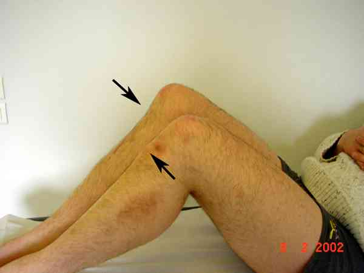

Bienvenue Sur Medical Education
Entorses du genou
Spécialité : traumatologie /
Points importants
-
On distingue plusieurs types d'entorses en fonction des lésions et de l'examen clinique
-
Cela va du plus simple au plus compliqué en sachant que, dans bien des cas, il faudra s'aider d'une IRM ou d'un examen sous anesthésie
-
Ces lésions doivent être gérées en collaboration avec un chirurgien orthopédiste compétent en chirurgie du genou
-
Les entorses graves du genou sont celles qui intéressent le pivot central à savoir le LCA et/ou le LCP et qui peuvent conduire à une invalidité dans la vie quotidienne ; il ne faut pas passer à côté d'une éventuelle indication chirurgicale en urgence car les séquelles des laxités périphériques sont souvent très difficiles à traiter « à froid »
-
Les lésions du LCP sont relativement rares, surtout en pratique sportive, et passent volontiers inaperçues dans le cadre de l'urgence
-
Les ruptures isolées du LCP peuvent, dans certains cas, parfaitement cicatriser avec un traitement orthopédique précoce et bien conduit
Présentation clinique / CIMU
ENTORSE DU LLI (ligament collatéral médial)
-
Douleur sur le LLI (surtout insertion fémorale)
-
Pas de tiroir, genou en flexion, ni près de l'extension (pas de Lachman), pas de ressaut
-
Laxité interne nulle ou modérée
-
Radiographies : habituellement normales
RUPTURES « ISOLEES » DU LCA
-
La « rupture isolée » correspond à l'absence de lésions périphériques sans préjuger des lésions méniscales éventuelles
Présentation clinique / CIMU
ENTORSE DU LLI (ligament collatéral médial)
- Douleur sur le LLI (surtout insertion fémorale)
- Pas de tiroir, genou en flexion, ni près de l'extension (pas de Lachman), pas de ressaut
- Laxité interne nulle ou modérée
- Radiographies : habituellement normales
RUPTURES « ISOLEES » DU LCA
- La « rupture isolée » correspond à l'absence de lésions périphériques sans préjuger des lésions méniscales éventuelles
_917
- - -
Lésions méniscales
Interrogatoire
Examen clinique
_916
- - -
Examen clinique du genou
_912
- - -
Choc rotulien
Entorses antéro-internes (antéro-médiales)
Entorses antéro-externes (antéro-latérales)
Entorses antéro-postérieures
Ruptures isolées du LCP

_420
Photo
Avalement de la tubérosité tibiale antérieure
Ruptures du LCP associées à des lésions périphériques
Radiologie
ENTORSES GRAVES AVEC LAXITES PERIPHERIQUES
RUPTURES DU LCP
Signes paracliniques
RUPTURES "ISOLEES" DU LCA
 _458
Photo
Contusion osseuse signant la rupture du LCA
_458
Photo
Contusion osseuse signant la rupture du LCA
IRM
- L'IRM devient, de plus en plus, un examen incontournable pour voir les lésions associées (lésions méniscales, contusions osseuses)
_460 Photo IRM montrant la rupture du LCA
- Peu de raisons pour la demander en urgence
- La chirurgie du LCA est effectuée en urgence différée (au-delà du 2e mois) plutôt qu'en urgence (moins de raideurs, moins d'algodystrophies, moins de genoux douloureux résiduels, etc.)
ENTORSES GRAVES AVEC LAXITES PERIPHERIQUES
Radiologie
- Le bilan radiographique est indispensable pour éliminer une éventuelle fracture associée
IRM
- L'IRM ne doit pas faire retarder la prise en charge chirurgicale si celle-ci est justifiée (examen sous anesthésie aussi performant voire plus performant dans des mains expérimentées)
RUPTURES DU LCP
Radiologie
- La radiographie est souvent normale
- Cependant, dans certains cas, elle peut montrer une discrète translation postérieure du tibia (à comparer avec le côté opposé) ou une fracture-avulsion de l'insertion tibiale du LCP
- Il est très important de quantifier le tiroir postérieur par des clichés dynamiques de profil genou fléchi à 90° ce qui orientera l'indication thérapeutique
_462 Photo Tiroir postérieur supérieur à 10 mm
IRM
- L'IRM est de plus en plus demandée pour confirmer le diagnostic (voir la localisation de la rupture) et visualiser les lésions associées éventuelles
_463 Photo IRM montrant une rupture du LCP
- L'IRM ne doit pas faire retarder la prise en charge chirurgicale si celle-ci est justifiée (examen sous anesthésie aussi performant voire plus performant dans des mains expérimentées)
Diagnostic étiologique
-
Entorses du LLI (ligament collateral medial)
-
Ruptures « isolées » du LCA
-
Entorses graves avec laxités périphériques
-
Ruptures du ligament croisé postérieur
Diagnostic différentiel
ENTORSES DU LLI (ligament collatéral médial)
-
Lésion du ménisque interne (douleur sur l'interligne interne)
-
Luxation spontanément réduite de la rotule (cf. luxation de la rotule)
-
Contusion face interne du genou (mécanisme différent)
RUPTURES« ISOLEES » DU LCA
Diagnostic différentiel
ENTORSES DU LLI (ligament collatéral médial)
- Lésion du ménisque interne (douleur sur l'interligne interne)
- Luxation spontanément réduite de la rotule (cf. luxation de la rotule)
- Contusion face interne du genou (mécanisme différent)
RUPTURES« ISOLEES » DU LCA
Il faut éliminer :
- Entorse du LLE (ligament collatéral latéral) : celle-ci n'existe pas ou est exceptionnelle à l'état isolé
-
Lésions du ménisque interne et/ou du ménisque externe :
- ces lésions peuvent se voir à l'état isolé (cf. lésions des ménisques) mais peuvent aussi être associées aux ruptures du LCA
- une douleur de l'interligne interne et/ou externe associée à un déficit d'extension douloureux et « élastique » doit évoquer la possibilité d'une lésion en anse de seau du ménisque concerné
- l'IRM vient, le cas échéant, confirmer le diagnostic
- Contusion du genou (hormis la douleur, tous les signes objectifs de l'examen clinique sont négatifs)
- Luxation traumatique de la rotule
Traitement
ENTORSES DU LLI (ligament collatéral médial)
-
Attelle amovible ou plâtre pendant 30 à 45 jours
-
Jamais de strapping car risque de flexum antalgique irréductible
-
En cas d'attelle, toujours associer de la rééducation pour éviter l'installation d'un flexum antalgique qui risque de mettre des mois à disparaître
RUPTURES « ISOLEES » DU LCA
-
Attelle amovible pendant 8 à 10 jours
-
Avec antalgiques et anti-inflammatoires
-
Les anticoagulants sont discutables chez les patients sans risque majeur
-
Rééducation immédiate (physiothérapie anti-inflammatoire, récupération des amplitudes normales, musculation du quadriceps et des ischio-jambiers)
-
Nouveau bilan 8 jours plus tard si doute sur le diagnostic, avec possibilité de demander des clichés en stress sur appareil Telos® permettant de visualiser le tiroir antérieur et de le quantifier
_459 Photo Recherche de tiroir antérieur sur appareil Telos®
- Arthroscopie inutile pour voir la rupture éventuelle du LCA
- Les fractures-avulsions du massif des épines tibiales peuvent conduire, dans certains cas, à une indication chirurgicale en urgence (gros fragment déplacé) : un avis spécialisé précoce s'impose dans ce cas-là entorses graves avec laxités périphériques
ENTORSES GRAVES AVEC LAXITES PERIPHERIQUES
- Ne pas passer à côté d'une éventuelle indication chirurgicale en urgence car les séquelles des laxités périphériques sont souvent très difficiles à traiter « à froid »
- Le bilan radiographique est indispensable pour éliminer une éventuelle fracture associée
- L'IRM ne doit pas faire retarder la prise en charge chirurgicale si celle-ci est justifiée (examen sous anesthésie aussi performant voire plus performant dans des mains expérimentées)
- Intervention chirurgicale en urgence des genoux avec laxité périphérique en extension
-
Genoux qui n'ont qu'une laxité en flexion qui s'annule en extension :
- traitement orthopédique (plâtre pendant 45 jours)
- intervention chirurgicale en urgence des lésions bicroisées
RUPTURES DU LIGAMENT CROISE POSTERIEUR
Ruptures isolées du LCP
- Un avis chirurgical est indispensable dans la semaine qui suit le traumatisme
- Le genou peut être immobilisé temporairement dans une attelle amovible
- L'IRM est de plus en plus demandée pour confirmer le diagnostic (voir la localisation de la rupture) et visualiser les lésions associées éventuelles
_463 Photo IRM montrant une rupture du LCP
-
Le traitement est actuellement controversé (chirurgie ou traitement orthopédique) :
- immobilisation plâtrée genou en extension (position de réduction de la translation postérieure) pour une durée de 45 jours
- seules les fractures-avulsions de l'insertion tibiale du LCP sont opérées en urgence
Ruptures du LCP associées à des lésions périphériques
- Le plus souvent, indication opératoire => avis chirurgical en urgence
- L'IRM ne doit pas faire retarder la prise en charge chirurgicale si celle-ci est justifiée (examen sous anesthésie aussi performant voire plus performant dans des mains expérimentées)
Surveillance
ENTORSES DU LLI (ligament collatéral médial)
-
En cas d'attelle, toujours associer de la rééducation pour éviter l'installation d'un flexum antalgique qui risque de mettre des mois à disparaître
RUPTURES « ISOLEES » DU LCA
-
Rééducation immédiate (physiothérapie anti-inflammatoire, récupération des amplitudes normales, musculation du quadriceps et des ischio-jambiers)
-
Nouveau bilan 8 jours plus tard si doute sur le diagnostic, avec possibilité de demander des clichés en stress sur appareil Telos® permettant de visualiser le tiroir antérieur et de le quantifier
_459 Photo Recherche de tiroir antérieur sur appareil Telos®
Bibliographie
-
Traumatologie à l'usage de l'urgentiste. Sous la direction de Dominique Saragaglia. Editions Sauramps Médical. 2004
Auteur(s) : Jean-Jacques BANIHACHEMI, Dominique SARAGAGLIA